A8,8 = .827+ (JD)
A8,9 = .839+ (JD)
A8,10 = .815+ (JD)
A8,11 = .815+ (JD)
A8,12 = .816+ (JD)
A8,13 = .823+ (JD)

A8,14 = .830+ (JD)
A8,15 = .837+ (JD)
| 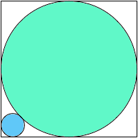 A1,1 = (9/2 – 3√2)π = .808+ | 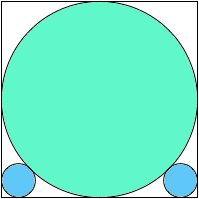 A1,2 = (35/4 – 6√2)π = .831+ | 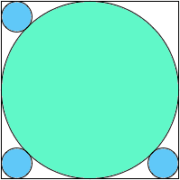 A1,3 = (13 – 9√2)π = .854+ | 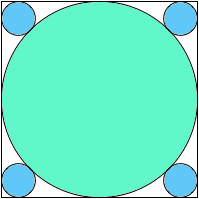 A1,4 = (69/4 – 12√2)π = .877+ |
| 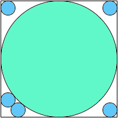 A1,5 = .845+ | 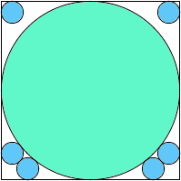 A1,6 = .857+ | 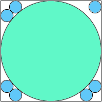 A1,7 = .868+ | 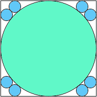 A1,8 = .880+ |
| 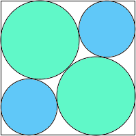 A2,2 = .817+ | 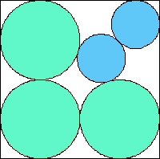 A2,3 = .733+ (MM) | 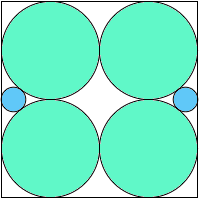 A2,4 = 33π/128 = .809+ | 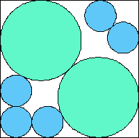 A2,5 = .742+ (MM) |
| 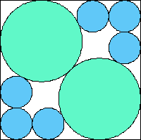 A2,6 = .783+ | 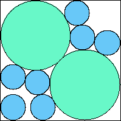 A2,7 = .781+ (JD) | 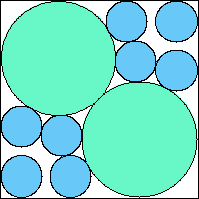 A2,8 = .815+ (JD) | 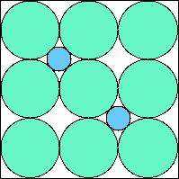 A2,9=(15-4√2)π/36=.815+ (JD) |
| 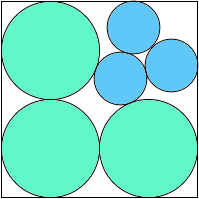 A3,3 .758+ | 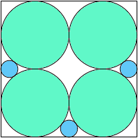 A3,4 = 67π/256 = .822+ | 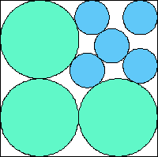 A3,5 = .780+ (MM) | 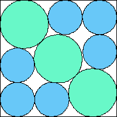 A3,6 = .815+ (MM) |
| 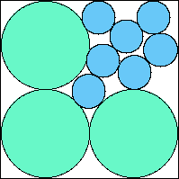 A3,7 = .787+ (JD) | 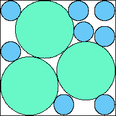 A3,8 = .802+ (JD) | 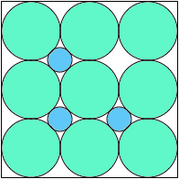 A3,9 = (3-√2)π/6 = .830+ | 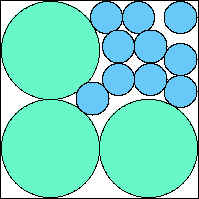 A3,10 = .802+ (JD) |
| 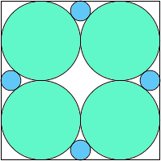 A4,4 = 17π/64 = .834+ | 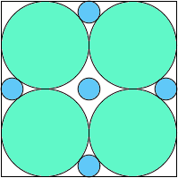 A4,5 = 69π/256 = .846+ | 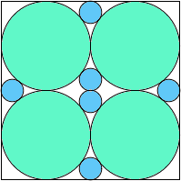 A4,6 = 35π/128 = .859+ | 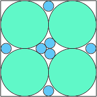 A4,7 = .850+ |
| 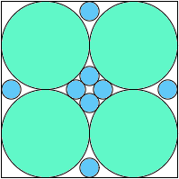 A4,8 = .859+ | 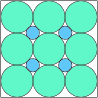 A4,9 = (21-8√2)π/36 = .845+ | 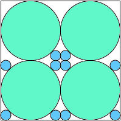 A4,10 = 3(29-20√2)π/8 = .843+ | 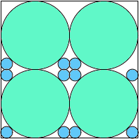 A4,11 = .848+ |
| 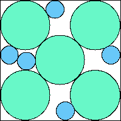 A5,5 = .763+ (JD) | 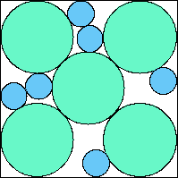 A5,6 = .781+ (JD) | 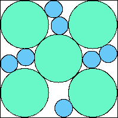 A5,7 = .799+ (JD) | 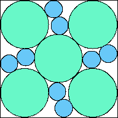 A5,8 = .817+ (JD) |
| 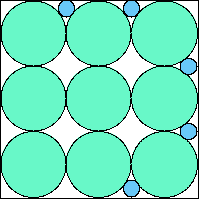 A5,9 = 149π/576 = .812+ (JD) | 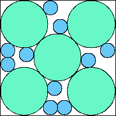 A5,10 = .800+ (JD) | 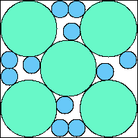 A5,11 = .813+ (JD) | 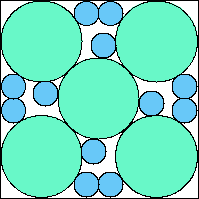 A5,12 = .825+ (JD) |
| 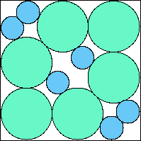 A6,6 = .771+ (JD) | 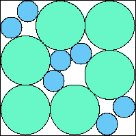 A6,7 = .783+ (JD) | 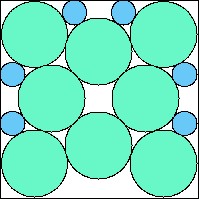 A6,8 = .803+ (JD) | 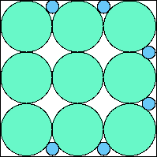 A6,9 = 75π/288 = .818+ (JD) |
| 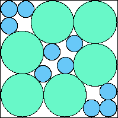 A6,10 = .805+ (JD) | 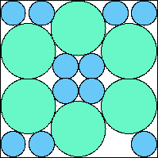 A6,11 = .812+ (JD) | 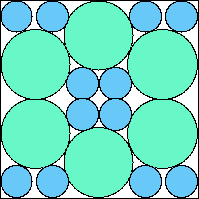 A6,12 = .832+ (JD) | 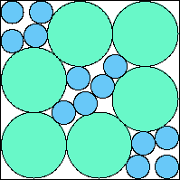 A6,13 = .821+ (JD) |
| 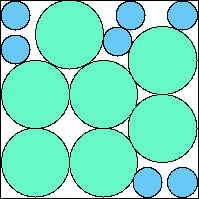 A7,7 = .790+ (JD) | 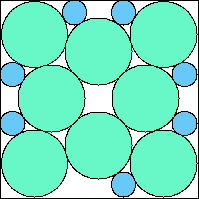 A7,8 = .815+ (JD) | A7,9 = 151π/576 = .823+ (JD) | A7,10 = .799+ (JD) |
A7,11 = .794+ (JD) | A7,12 = .805+ (JD) | A7,13 = .812+ (JD) | A7,14 = .819+ (JD) |
A8,8 = .827+ (JD) | A8,9 = .839+ (JD) | A8,10 = .815+ (JD) | A8,11 = .815+ (JD) |
A8,12 = .816+ (JD) | A8,13 = .823+ (JD) | A8,14 = .830+ (JD) | A8,15 = .837+ (JD) |
A9,9 = 153π/576 = .834+ (JD) | A9,10 = ? | A9,11 = ? | A9,12 = ? |
If you can extend any of these results, please e-mail me. Click here to go back to Math Magic. Last updated 5/23/14.